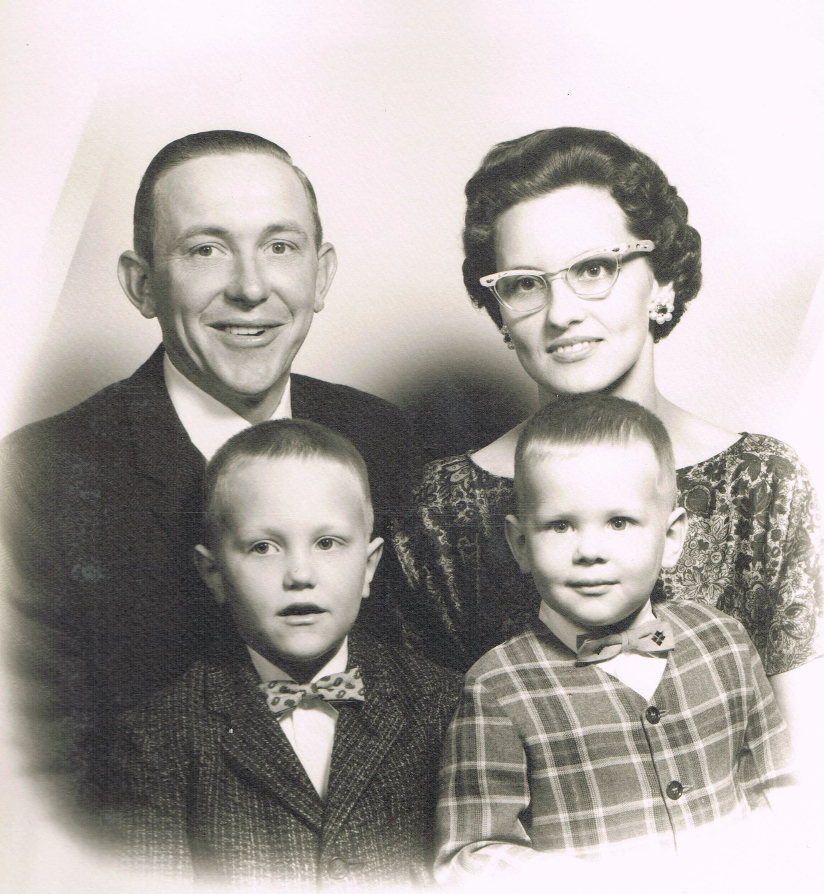

1949
W.W. Beamer opens a produce stand where local produce and eggs are sold from a small home in West Point.
In 1949, owner and founder W.W. Beamer began operating from a produce stand in West Point, Virginia. What started as a roadside stand evolved through wholesale sourcing and family leadership into Virginia Produce Company.
Through decades of growth, the company expanded from local operations into broad produce distribution while remaining family-owned and customer-focused.

W.W. Beamer opens a produce stand where local produce and eggs are sold from a small home in West Point.
The company transitions toward wholesale produce, serving grocery and wholesale markets with greater volume.
Toby and Terri Beamer expand Virginia Produce and strengthen customer service and product quality programs.
Virginia Produce continues to grow under family leadership and a dedicated team across operations and sales.